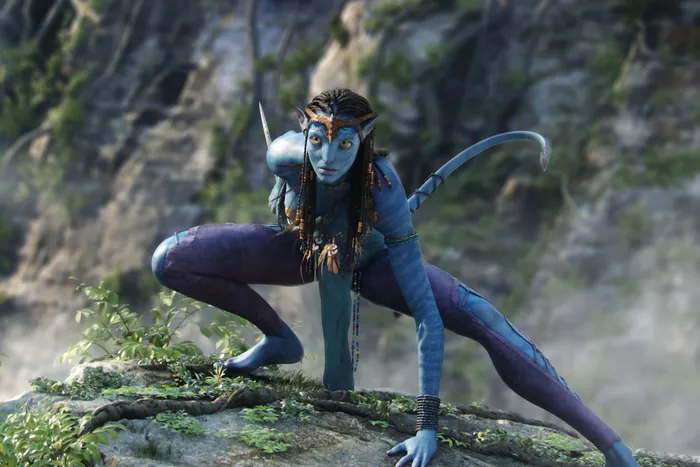
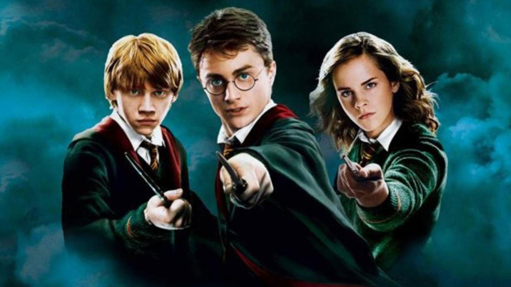

Avatar
Director: James Cameron
In the 22nd century, Earth's Resources Development Administration (RDA) mines for the valuable mineral unobtanium
on the moon Pandora. The Na'vi, blue-skinned humanoids, inhabit Pandora, living in harmony with nature. Humans
explore Pandora through "avatars," Na'vi-human hybrids. Paralyzed Marine Jake Sully takes over his deceased twin's
avatar mission. He meets Neytiri, a Na'vi female, who introduces him to her tribe. RDA's Colonel Quaritch promises
Jake his legs back if he gathers intel for an upcoming invasion. As Jake bonds with the Na'vi, he faces a moral
choice. Tensions escalate, leading to a battle between humans and the Na'vi. Jake decides to side with the Na'vi
against RDA's exploitative plans. The film emphasizes themes of nature, industrialism, and spiritual connection.

Films:
- Avatar
- Avatar: The Way of Water
Main characters are:
- Jake Sully: A paraplegic former Marine who is selected to participate in the Avatar Program on Pandora after
his twin brother's death. Over time, he grows close to the Na'vi and becomes torn between helping them and
fulfilling his mission for the humans.
- Neytiri: A female Na'vi from the Omaticaya clan. She becomes Jake's teacher, guiding him through the ways of
the Na'vi, and eventually, they form a close bond. She plays a crucial role in the resistance against human
exploitation.
- Dr. Grace Augustine: An avatar operator and scientist who runs the Avatar Program. She's initially skeptical
of Jake but grows to trust him. Grace has a deep respect for the Na'vi and opposes the destructive actions of
the human corporation on Pandora.
Harry Potter
The "Harry Potter" film series chronicles the life of a young wizard, Harry Potter, and his friends Hermione
Granger and Ron Weasley, all of whom are students at Hogwarts School of Witchcraft and Wizardry. The main story
arc concerns Harry's struggle against the dark wizard Lord Voldemort, who aims to become immortal and subjugate
the wizarding world. Throughout their school years, Harry and his friends confront various challenges, uncovering
the mysteries of Harry's past, the truth about his parents' death, and the significance of the lightning bolt scar
on his forehead. Themes of friendship, love, bravery, and the enduring battle between good and evil are interwoven
throughout the series, culminating in a climactic final battle and the defeat of Voldemort.

Films:
- Sorcerer's Stone: An orphaned Harry learns he's a wizard, attends Hogwarts, discovers his fame, and thwarts
Voldemort's attempt to return using the Sorcerer's Stone.
- Chamber of Secrets: Harry confronts a monster from the Chamber of Secrets, saves Ginny Weasley, and learns
more about Voldemort's early life.
- Prisoner of Azkaban: Harry discovers that Sirius Black, his godfather, has escaped from Azkaban. He learns
more about his parents and battles Dementors.
- Goblet of Fire: Harry competes in the dangerous Triwizard Tournament and witnesses the return of Voldemort.
- Order of the Phoenix: Harry forms "Dumbledore's Army" to combat the denial of Voldemort's return by the
Ministry of Magic and faces a tragic loss.
- Half-Blood Prince: Harry delves into Voldemort's past and the concept of Horcruxes. Dumbledore is tragically
killed by Snape.
- Deathly Hallows – Part 1: The trio goes on the run, searching for Horcruxes while evading Death Eaters,
leading to significant losses.
- Deathly Hallows – Part 2: The final battle ensues at Hogwarts, culminating in the epic confrontation between
Harry and Voldemort.
Main characters are:
- Harry Potter: The protagonist of the series, an orphaned boy who discovers he's a wizard and has a crucial
role to play in the defeat of the dark wizard, Voldemort.
- Hermione Granger: Harry's close friend, known for her intelligence and strong-willed nature. She's
Muggle-born, which means both her parents are non-magical.
- Ron Weasley: Another of Harry's best friends, he comes from a large, loving wizarding family and is known for
his loyalty and bravery.
Villains are:
- Lord Voldemort (Tom Riddle): The primary antagonist of the series, a dark wizard obsessed with blood purity
and immortality. He's responsible for the deaths of Harry's parents and countless others.
- Bellatrix Lestrange: One of Voldemort's most devoted followers, known for her cruelty and madness.
- Draco Malfoy: A student at Hogwarts from the Slytherin house, he often opposes Harry and his friends. However,
while he starts as an antagonist, his character becomes more complex as the series progresses.